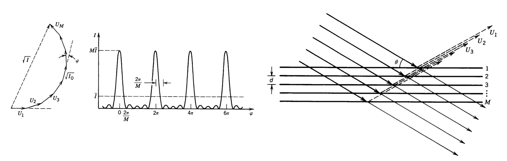
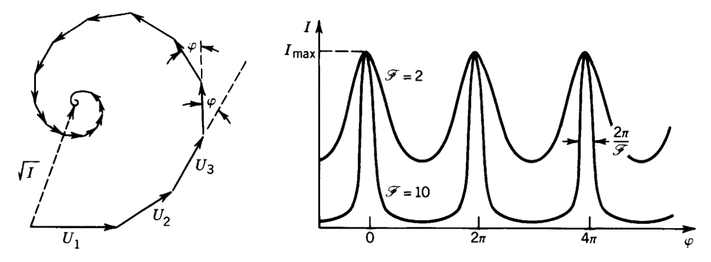

This page was generated from `/home/lectures/exp3/source/notebooks/L7/Thin Film Interference.ipynb`_.

Thin Film Interference¶
The reflection and transmission of waves on a thin film can also be regarded as an interference of two waves. A light wave is incident on a thin film as depicted below. A part of the wave is reflected on the first boundary (1). Another part is transmitted through the first boundary and reflected at the second boundary to be transmitted in the same direction (2) as the first reflected part. Note that the lines and arrows denote the direction of the wavevector \(\vec{k}\) of the partial waves.
|
|---|
Fig.: Interference on a thin film considering two partial waves. |

This picture of a single reflection at each of the interfaces is certainly a simplification and in general we would have to consider an infinite number of reflections. But if we assume that the reflection is weak (e.g. 4% as for the air/glass interface), then the next reflection would just diminish the 4% to 4% of 4%, which is really weak. So the two wave interference may be a good model for weak reflections.
For the geometry shown in the figure above, we have just have a medium with \(n_1\) surrounding the film with \(n_2\). For this situation, we may calculate the path difference \(\Delta s\), the waves 1 and 2 have to travel.
We find
where the first term contains the distance traveled by wave 2 inside the water film. The second term is the additional distance wave 1 has to travel after being reflected which is indicated by the dotted line inbetween.
We can now introduce Snells law into the calculation, as Snells law must be also valid in wave optics and also in electromagnetic optics. With \(n_1\sin(\alpha)=n_2\sin(\beta)\) and setting \(n_1=1\) and \(n_2=n\) we can rewrite the path difference as
With that we can now also calculate the phase shift \(\Delta \phi\) that is introduced through the path difference, which reads
You may now wonder about the second part \(\pi\), which is not coming from a path difference. This addition phase shift occurs due to the reflection at an interface with higher refractive index. For such a reflection, there is always a phase jump of \(\phi\), which we have to consider. This is not occuring for the reflection at the second boundary, as we there go from a higher refractive index to a lower one.
Phase Jump at Boundaries
Wave may experience phase jumps when being reflected.
A light wave will experience a phase jump of \(\pi\) when being reflected by a medium of higher refractive index.
A light wave will experience no phase jump when being reflected by a medium of lower refractive index.
The physical reasons will be covered when we deal with the Fresnel formulas in electromagnetic optics.
To get to know the properties of thin film interference a bit better we consider the normal incidence \(\alpha=0\), which leaves us with
In case we are searching for constructive interference, this phase shift should correspond to an integer multiple of \(2\pi\), e.g. \(\Delta \phi =m2\pi\). From the last equation we see already, that for \(d=0\), we have in principle a residual phase shift of \(\pi\), meaning that there is only destructive interference. Yet a film thickness of zeor does not really make sense.
We would like to discuss two different situations in the following in an example. For that we either look at the thickness under which a constructive interference at a wavelength of \(\lambda\) occurs, or we ask what kind of wavelength do show constructive interference for a fixed thickness.
Fixed Wavelength
For a fixed wavelength of \(\lambda\) we obtain a corresponding thickness for the constructive interference of
Fixed Thickness
For a fixed thickness of \(d\) we obtain constructive interference at
We can now have a look at two examples.
Example 1 - d=100 nm
If we look at a film thickness of \(d=100\) nm and a film of \(n=1.33\), which corresponds to water we obbtain constructive interference for
or
which yields for different values of \(m\)
\(m=1\): 532 nm
\(m=2\): 177 nm
\(m=3\): 106 nm
and so on. We see therefore that the longest wavelength to create constructive interference is \(532\) nm, which is green light. The next longest wavelength is 177 nm, which is not visible anymore, so the reflection of a \(d=100\) nm film would look green. The left plot in the figure below shows the intensity distribution over wavelength where you recognize that the maximum is very broad.
|
|---|
Fig.: Reflection from a 100 nm (left) and a 10 nm (right)thin water film. |


An interesting effect is appearing, when the thickness of the water film get very thin. We may ask, when is no constructive interference observed. We therefore set the wavelength of the constructive interefence to \(\lambda_{max}=400\, {\rm nm}\) and calculate the film thickness for which this occurs.
So for film thickness of water thinner than 75 nm, there is no constructive interference of the reflected light from the two boundaries in the visible region anymore. There will be still a reflection but no specific color. If the film gets even thinner, the intensity of the reflected light is further diminished by desctructive interference and whe obtain no reflection as shown on the right side of the above figure for a \(d=10\) nm film. Such thin films, which do not show any reflection are called Newton black films. You might have seen them, if you look closer at soap bubbles. They will show regions, which look like holes, but of course there are no holes in soap bubbles.
If the film gets thicker, e.g. \(d=1\) µm or even \(d=100\) µm, more than one constructive interference fits into the visible wavelength range. Due to that, the film may appear to have mixed colors or even look white. Below are the diagrams for those film thicknesses.
|
|---|
Fig.: Reflection from a 1 µm (left) and a 100 µm (right)thin water film. |


|
|---|
Fig.: Experimental demonstration of the reflection of white light by a thin soap film. |


Multiple Wave Interference¶
So far we looked at the interference of two waves, which was a simplification as I mentioned already earlier. Commonly there will be a multitude of partial waves contribute to the oberved intereference. This is what we would like to have a look at now. We will do that in a quite general fashion, as the resulting formulas will appear several times again for different problems.
Nevertheless we will make a difference between
multiwave interference of waves with the same amplitude
multiwave interference of waves with decreasing amplitude
Especially the latter is often occuring, if we have multiple reflections and each reflection is only a fraction of the incident amplitude.
Multiple Wave Interference with Constant Amplitude¶
In the case of constant amplitude (for example realized by a grating, which we talk about later), the total wave amplitude is given according to the picture below by
where we sum the amplitude over \(M\) partial waves. Between the neighboring waves (e.g. \(U_1\) and \(U_2\)), we will assume a phase difference (because of a path length difference for example), which we denote as \(\phi\).
The amplitude of the p-th wave is then given by
with the index \(p\) being an interger \(p=1,2,\ldots,M\), \(h=e^{i\phi}\) and \(\sqrt{I_0}\) as the amplitude of each individual wave. The total amplitude \(U\) can be then expressed as
which is a geometric sum. We can apply the sum formula for geometric sums to obtain
We now have to calculate the intensity of the total amplitude
which we can further simplify to give
 |
|---|
Fig.: Multiple wave interefence. Left: Phase construction of a multiwave intereference with M equal amplitude waves. Middle: Intensity distribution obtained as a function of the phase shift \(\phi\). Right: Examplary sketch of the interference generation. |
The result is therefore an oscillating function. The numerator \(\sin^2(M\phi/2)\) shows and oscillation frequency, which is by a factor of \(M\) higher than the one in the denominator \(\sin^2\phi/2)\). Special situations occur, whenever the numerator and the denominator become zero. This will happen whenever
where \(m\) is an integer and denotes the interference order, i.e. the number of wavelength that neighboring partial waves have as path length difference. In this case, the intensity distributiion will give us
and we have to determine the limit with the help of l’Hospitals rule. The outcome of this calculation is, that
which can be also realized when using the small angle approximation for the sine functions.
Since he numerator is much faster oscillating then the denominator, we may also encounter the situation, where the numerator is zero, but the denomintor is not. These situations result in the additional minima between the primary maxima. We will have exactly \(M-1\) minima between the global maxima and \(M-2\) primary maxima. We will come back to these details when we talk about the diffraction grating in the next section.
Multiple Wave Interference with Decreasing Amplitude¶
We will turn our attention now to a slight modification of the previous multiwave interference. We will introduce a decreasing amplitude of the individual waves. The first wave shall have an amplitude \(U_1=\sqrt{I_0}\). The next wave, however, will not only be phase shifted but also have a smaller amplitude.
where \(h=re^{i\phi}\) with \(|h|=r<1\). \(r\) can be regarded as a reflection coefficient, which deminishes the amplitude of the incident wave. According to that the intensity is reduced by
The intensity of the incident wave is multiplied by a factor \(r^2\), while the amplitude is multiplied by \(r\). Note that the phase factor \(e^{i\phi}\) is removed when taking the square of this complex number.
Intensity at Boundaries
The amplitude of the reflected wave is diminished by a factor \(r\le 1\), which is called the reflection coefficient. The intensity is diminished by a factor \(R=|r|^2\le1\), which is the reflectance.
In the absence of absorption, reflectance \(R\) and transmittance \(T\) add to one due to energy conservation.
Consequently, the third wave would be now \(U_3=hU_2=h^2U_1\). The total amplitude is thus
 |
|---|
Fig.: Multiple wave interefence with decreasing amplitudes. Left: Phase construction of a multiwave intereference with M equal amplitude waves. Right: Intensity distribution obtained as a function of the phase shift \(\phi\). |
This yields again
Calculating the intensity of the waves is giving
which is also known as the Airy function. This function can be further simplified by the following abbrevations
and
where the latter is called the Finesse. With those abbrevations, we obtain
for the interference of multiple waves with decreasing amplitude.
This intensity distribution has a different shape than the one we obtained for multiple waves with the same amplitude.
|
|---|
Fig.: Multiple wave interference with decreasing amplitude. The graph shows the intensity distribution over the phase angle \(\phi\) for different values of the Finesse \(\mathcal{F}\). |

We clearly observe that with increasing Finesse the intensity maxima, which occur at multiples fo \(\pi\) get much narrower. In addition the regions between the maxima show better contrast and fopr higher Finesse we get complete destructive interference.